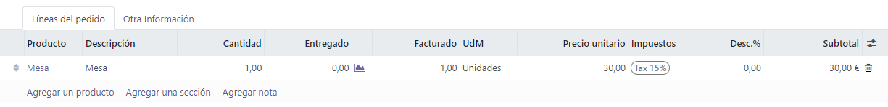
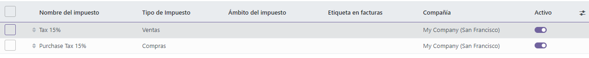
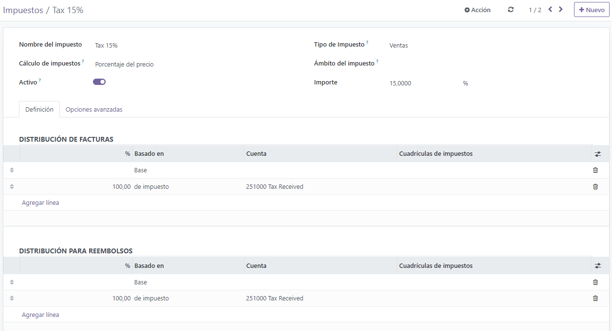
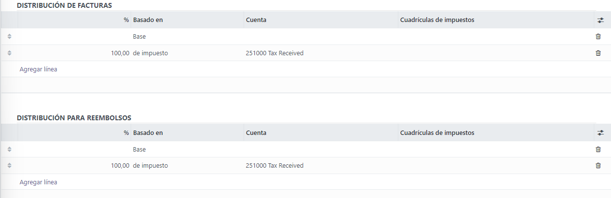
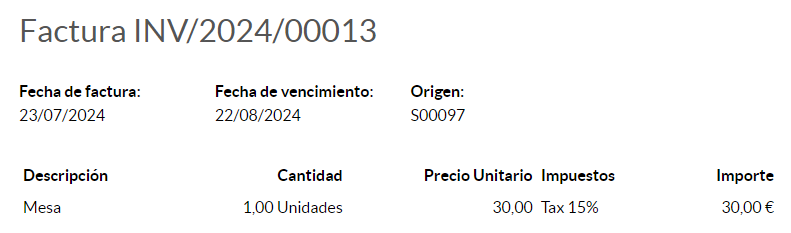
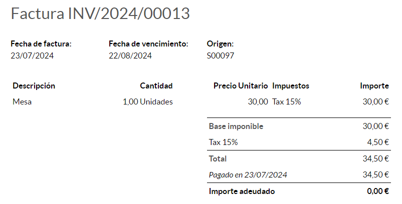
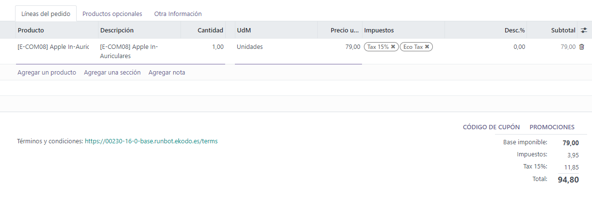
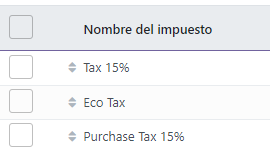

Impuestos¶
Hay varios tipos de impuestos, y su uso varía mucho, esto depende principalmente de la ubicación de su empresa. Para asegurarse de que se registran correctamente, el sistema de impuestos de Odoo es compatible con todo tipo de usos y cálculos.
Impuestos predeterminados¶
Los Impuestos predeterminados definen cuáles impuestos se seleccionan automáticamente cuando no hay ninguna otra indicación sobre qué impuesto usar. Por ejemplo, Odoo completa previamente el campo Impuestos con los impuestos predeterminados cuando se crea un nuevo producto o se añade una nueva línea en una factura.
Si desea cambiar sus impuestos predeterminados, vaya a , seleccione los impuestos apropiados para su impuesto de venta e impuesto de compra, y haga clic en Guardar.

Nota
Los impuestos predeterminados se configuran de forma automática según el país seleccionado en la creación de su base de datos, o al configurar un paquete de localización fiscal para su empresa.
Activar los impuestos sobre la venta desde la vista de lista¶
Como parte de su paquete de localización fiscal, la mayoría de los impuestos de ventas de su país ya están preconfigurados en su base de datos. Sin embargo, solo algunos de ellos están activados de forma predeterminada, de esta forma puede activar solo los que sean relevantes para su empresa.
Para activar los impuestos de venta, vaya a y utilice el botón activar para activar o desactivar un impuesto.
Configuración¶
Si desea editar o crear un impuesto, vaya a , abra un impuesto o haga clic en crear.
Importante
Los impuestos tienen tres etiquetas diferentes, cada una con un uso específico. Consulte la siguiente tabla para ver en qué lugar aparecen.
Backend |
La columna impuestos en las facturas exportadas |
Arriba de la línea total en las facturas exportadas |
Opciones principales¶
Nombre del impuesto¶
El nombre del impuesto tal y como lo quiere mostrar a los usuarios del backend. Esta es la etiqueta que se ve mientras se editan las órdenes de venta, facturas, productos, etc.
Cálculo de impuestos¶
Grupos de impuestos
El impuesto es una combinación de varios subimpuestos. Puede agregar tantos impuestos como desee, en el orden en el que desee que se apliquen.
Importante
Asegúrese de que la secuencia de impuestos es correcta, ya su orden puede afectar al cálculo de los importes de los impuestos, en especial si uno de los impuestos afecta a la base de los siguientes.
Fijo
El impuesto tiene un importe fijo en la divisa predeterminada. El importe sigue siendo el mismo, independientemente del precio de venta.
Por ejemplo, si un producto tiene un precio de venta de $1000, y aplicamos un impuesto fijo de $10. El resultado es:
Precio de venta del producto
Precio sin impuestos
Impuesto
Total
1,000
1,000
10
1,010.00
Porcentaje del precio
El precio de venta es la base del impuesto: el importe del impuesto se calcula multiplicando el precio de venta por el porcentaje del impuesto.
Por ejemplo, si un producto tiene un precio de venta de $1000, y aplicamos un impuesto del 10% del precio. Tendremos entonces:
Precio de venta del producto
Precio sin impuestos
Impuesto
Total
1,000
1,000
100
1,100.00
Porcentaje del precio con impuestos incluidos
El total es la base del impuesto: el importe del impuesto es un porcentaje del total.
Por ejemplo, si un producto tiene un precio de venta de $1000 y aplicamos un impuesto del 10% del precio incluido. Tendremos:
Precio de venta del producto
Precio sin impuestos
Impuesto
Total
1,000
1,000
111.11
1,111.11
Activo¶
Solo se pueden agregar impuestos activos a los nuevos documentos.
Importante
No es posible eliminar los impuestos que ya se han utilizado. En su lugar, puede desactivarlos para evitar su uso en el futuro.
Nota
Este campo se puede modificar desde la vista de lista. Consulte esta sección para obtener más información.
Ámbito del impuesto¶
El ámbito del impuesto determina el uso del impuesto, lo cual también limita su visualización.
Ventas: facturas de clientes, impuestos de productos de clientes, etc.
Compra: facturas de proveedores, impuestos de proveedores de productos, etc.
Ninguno
Truco
Puede utilizar la opción ninguno para los impuestos que desee incluir en un grupo de impuestos pero que no desee incluir en la lista junto con los otros impuestos de venta o compra.
Pestaña de definición¶
Asigne el importe de la base del impuesto o los porcentajes del impuesto calculado a varias cuentas y tablas de impuestos.
Basado en:
Base: el precio en la línea de factura
% de impuesto: un porcentaje del impuesto calculado.
Cuenta: si está definida, se registra un apunte contable adicional.
Tablas de impuestos: se usan para generar reportes de impuestos de forma automática, de acuerdo a las normativas de su país.
Pestaña de opciones avanzadas¶
Etiqueta en facturas¶
La etiqueta del impuesto, como se muestra en cada línea de la factura en la columna impuestos. Esta es la etiqueta visible para los usuarios del frontend.
Grupo de impuestos¶
Seleccione a qué grupo de impuestos pertenece el impuesto. El nombre del grupo de impuestos es la etiqueta que se muestra encima de la línea total en las facturas exportadas y en los portales de clientes.
Los grupos de impuestos incluyen diferentes repeticiones del mismo impuesto. Esto puede ser útil cuando se debe registrar de forma diferente el mismo impuesto según las posiciones fiscales.
Incluir en el costo analítico¶
Si activa esta opción, el importe del impuesto se asigna a la misma cuenta analítica que la línea de factura.
Incluido en el precio¶
Si activa esta opción, el total (con impuestos incluidos) es igual al precio de venta.
Total = Precio de venta = Precio calculado sin impuestos incluidos + Impuesto
Por ejemplo, un producto tiene un precio de venta de $1000, y aplicamos un impuesto del 10% del precio, que está incluido en el precio. Entonces tenemos:
Precio de venta del producto |
Precio sin impuestos |
Impuesto |
Total |
|---|---|---|---|
1,000 |
900.10 |
90.9 |
1,000.00 |
Nota
Si necesita definir los precios con precisión, tanto con o sin impuestos, consulte la siguiente documentación: Precios B2B (impuestos no incluidos) y B2C (impuestos incluidos).
Nota
Facturas: de forma predeterminada, los subtotales de línea mostrados en sus facturas son sin impuestos incluidos. Para mostrar los subtotales de línea con impuestos incluidos, vaya a , y seleccione con impuestos incluidos en el campo distribución de impuestos de los subtotales de línea, luego haga clic en guardar.
Comercio electrónico: de forma predeterminada, los precios mostrados en su sitio web de comercio electrónico son sin impuestos incluidos. Para mostrar los precios con impuestos incluidos, vaya a , y seleccione con impuestos incluidos en el campo precios de los productos, luego haga clic en guardar.
Afectación a la base de los impuestos subsecuentes¶
Con esta opción, el total de impuestos incluidos se convierte en la base del impuesto de los demás impuestos aplicados al mismo producto.
Puede configurar un nuevo grupo de impuestos que incluya este impuesto, o agregarlo directamente a una línea de producto.
Advertencia
El orden en el que se añaden los impuestos en una línea de producto no tiene ningún efecto sobre el cálculo de los importes. Si añade los impuestos directamente en una línea de producto, solo la secuencia de impuestos determina el orden en que se aplican.
Para reorganizar la secuencia, vaya a , y arrastre y suelte las líneas junto a los nombres de los impuestos.
Ver también
Precios B2B (impuestos no incluidos) y B2C (impuestos incluidos)
Integración con TaxCloud (en Odoo 17 y posteriores la integración con TaxCloud quedará fuera de servicio)